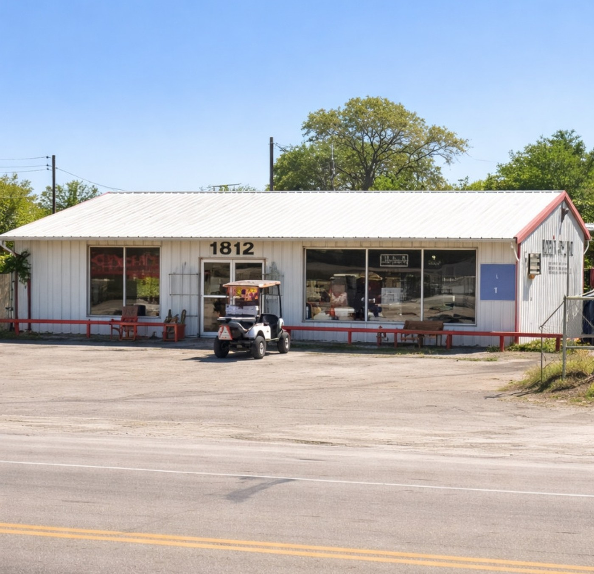
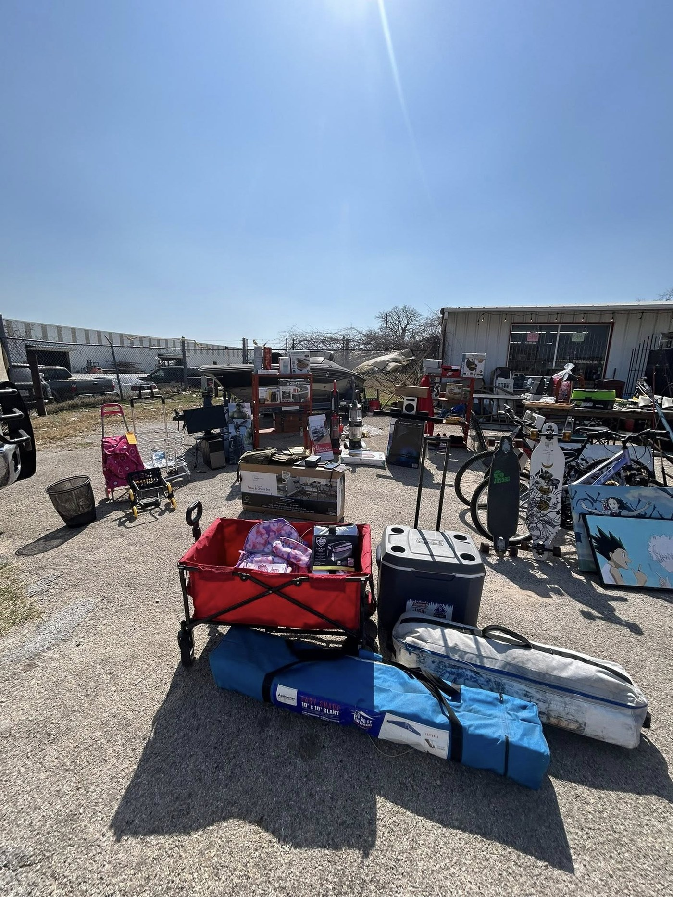

1
Come ready to browse
This is not a one-item showroom. It is a mixed resale shop, so the best visits are the ones where you take a look around.
Weatherford Local Resale & Thrift is located at 1812 Fort Worth Hwy in Weatherford. If you saw something on Facebook or want to check current hours, send a quick message first.

Right on Fort Worth Hwy, with a storefront that is easy to spot when you know where you are headed.
Use Google Maps or Apple Maps for the easiest route in.
Hours have not been fully confirmed on this preview, so the safest move is checking the Facebook page or sending a quick message before you come.
Inventory can move quickly. A quick Facebook message helps you avoid wasting a trip if you are coming for something specific.
This is not a one-item showroom. It is a mixed resale shop, so the best visits are the ones where you take a look around.
What was there last week may be gone now, and that is a big part of the fun for regulars.
If you want the fastest answer, message the page directly before heading over.
The advantage of a good local resale shop is not just price. It is finding the item you were not expecting. Give yourself a little room to browse, especially if you enjoy collectibles, décor, and mixed-inventory treasure hunting.
